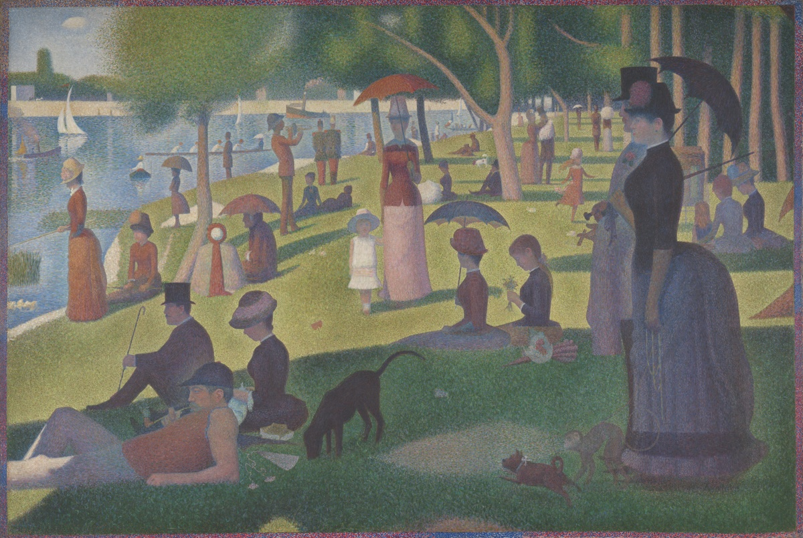
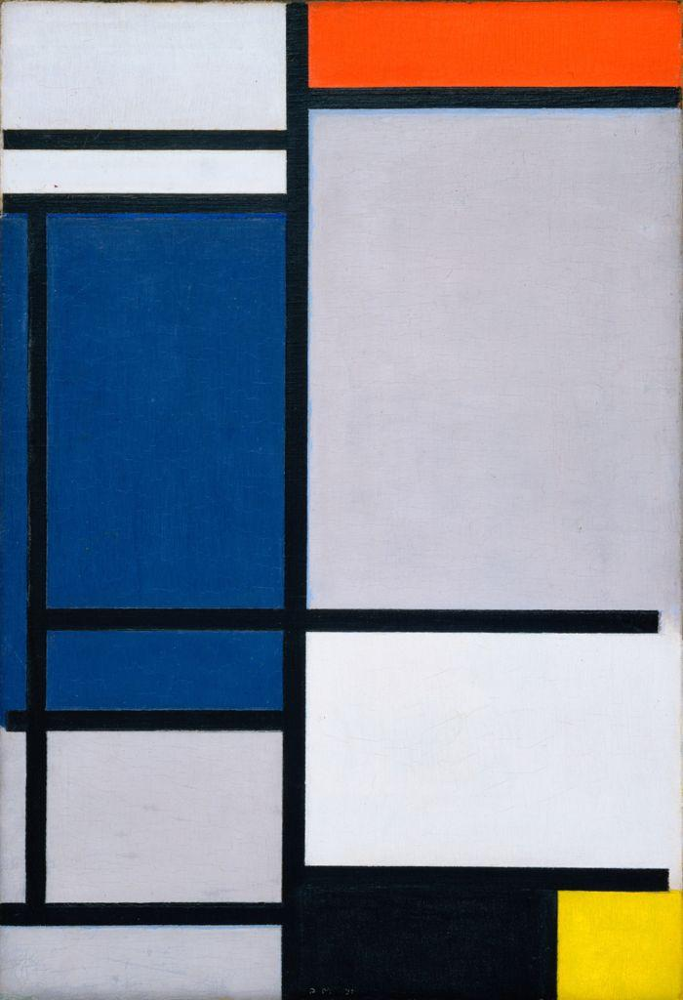
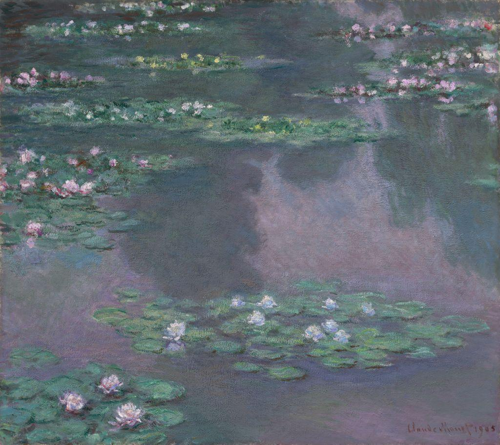

Color is the loudest element. Why do some colors sit quietly beside each other while others seem to vibrate, and how can you arrange every color so an artwork feels both lively and whole?
You named color back in Module 1. Now you will see how it is organized. The color wheel is the map artists use to mix, to draw the eye where they want it, and to hold a picture together. Learn the map once and you will reach for the right color on purpose.
👀 PART 1 · LOOK FIRST
Before we name anything, just look. Spend a full minute with the painting below. Then move close, in your imagination, until the figures break apart into thousands of tiny dots.

Georges Seurat (French, 1859 to 1891), A Sunday on La Grande Jatte — 1884, 1884 to 86. Oil on canvas. Art Institute of Chicago, Helen Birch Bartlett Memorial Collection. Public domain. Source: artic.edu/artworks/27992
Seurat did not blend his greens and oranges on a palette. He placed thousands of small, separate dots of pure color side by side and let your eye do the mixing. Stand back and the sunlit grass glows. Lean in and that same grass is really tiny strokes of yellow, green, blue, and even orange sitting next to each other. This method is called Pointillism, and it works because of how color behaves, the exact thing this module teaches.
💬 WONDER FIRST
Why would an artist refuse to mix paint and trust your eye to do it instead? What might dots of pure color do that a smooth, pre-mixed color cannot? Hold your answer. By the end of this lesson you will be able to explain it.
💭 QUICK CHECK-IN · NO WRONG ANSWER
Looking at the sunlit areas, how does Seurat's color make the light feel?
Every one of those answers can be defended from the painting. Color is doing all of it at once. Now learn the map that lets you control color the way Seurat did.
📚 PART 2 · NAME WHAT YOU SEE
The color wheel arranges colors in a circle so their relationships become visible. It is built in three layers. Start with the three colors you cannot mix from anything else, then build outward.
Primary colorsRed, yellow, blue. You cannot mix them from other paints. Every other color comes from these three.
Secondary colorsOrange, green, violet. Each is made by mixing two primaries: red plus yellow, yellow plus blue, blue plus red.
Tertiary colorsSix in-between colors, each made by mixing a primary with the secondary next to it, like yellow-orange or blue-green.
HueThe name of a color, its place on the wheel: red, blue-green, violet. Hue is what we usually mean by color.
IntensityHow bright or dull a color is, also called saturation. A pure hue is intense. Mix in its opposite and it goes gray.
Warm and coolOne half of the wheel feels warm, reds through yellows. The other half feels cool, greens through violets.
The 12-color wheel
Put all three layers together and you get the standard 12-color wheel: three primaries, three secondaries, and six tertiaries, in order around the circle. Yellow usually sits at the top, and the colors run around through orange, red, and violet on one side and back through blue and green on the other. This is the diagram you will design and build for your studio project.
Color relationships
Once colors sit on a wheel, their positions tell you how they will behave together. Two relationships matter most for this module.
Complementary
Colors that sit opposite each other on the wheel, like orange and blue. Placed side by side they intensify each other and seem to vibrate. Great for emphasis.
Analogous
Colors that sit next to each other on the wheel, like yellow, yellow-green, and green. They blend easily and feel calm and unified. Great for harmony.
Artists build whole pictures out of these relationships. The two public-domain paintings below show two very different color choices. The first keeps almost entirely to the pure primary hues; the second lives in a single analogous family of blues, greens, and violets.

Piet Mondrian (Dutch, 1872 to 1944), composition in the three primary colors with black and white, 1921. Public domain. (Pure primary hues.)

Claude Monet (French, 1840 to 1926), Water Lilies, 1905. Public domain. (Analogous blues, greens, and violets.)
💡 HELPFUL TO KNOW
Complementary pairs do two jobs at once. Placed beside each other, they create strong emphasis, pulling the eye to one spot. Mixed together, they dull each other into useful grays and browns. Analogous colors do the opposite job: they create unity, tying a picture together with a calm, related family of hues.
How the Pointillists used color
Seurat and the Pointillists studied the new color science of their day. They learned that placing dots of pure, intense color side by side, rather than mixing them on a palette, keeps each color brighter. From a distance your eye blends the dots into a glowing whole. This is called optical color mixing. They also set complementary dots next to each other, knowing the contrast would make the light feel even stronger.
🔍 PART 3 · WATCH IT WORK
Use the same four-step order you have practiced all year. The steps spell DAIJ: Describe, Analyze, Interpret, Judge. Watch it applied to Seurat's A Sunday on La Grande Jatte. You will use the same steps in your VR/Critique this week.
Describe (just the facts)
People relax on a grassy riverbank on a sunny afternoon. Some sit, some stroll. There are parasols, a dog, a small monkey on a leash, sailboats on the water. The whole surface is built from countless tiny dots.
Analyze (how is it built?)
Seurat uses optical color mixing: dots of pure color sit side by side so your eye blends them. Sunlit grass is dotted with warm yellows; the shaded grass turns cool with blues and violets. He sets complementary dots, orange against blue, so the lit areas seem to glow. The even, repeated dots give the picture a quiet unity across its huge surface.
Interpret (what is it saying?)
The scene is ordinary leisure, yet the careful, almost scientific dots make it feel calm, timeless, and a little still, as if the afternoon has been frozen and studied.
Judge (does it succeed?)
It succeeds. Seurat proved that understanding how colors behave lets an artist build light itself, dot by dot, instead of just copying it. That is the power of knowing the color wheel.
⚡ TRY IT · READ THE COLOR
Read each prompt, commit to an answer, then check it.
Seurat sets dots of orange right next to dots of blue so the sunlit grass seems to glow. Which relationship is he using?
Why did Seurat place separate dots of pure color rather than blend them on his palette first?
Which secondary color do you mix from the primaries yellow and blue?
▶ Try it in your notebook: name the complement of red, then reveal a check.
Write your answer before you open this. The complement of red is green, the color directly opposite it on the wheel. That is why a few red berries look so striking against green leaves.
⚠️ WORTH KNOWING · AI AND YOUR COLOR WHEEL
An AI tool can pull a color palette out of a photo in seconds and suggest hues that go together. It cannot teach you how pigments actually mix when red and yellow meet on real paper, or why two complementary colors intensify each other when they touch. Mixing your own twelve-color wheel by hand is what builds that understanding, and that is the work this project asks for.
📝 VOCABULARY
Color wheelA circle that arranges colors in order to show how they relate.
Primary colorsRed, yellow, blue; cannot be mixed from other colors.
Secondary colorsOrange, green, violet; each from two primaries.
Tertiary colorsThe six colors mixed from a primary and a neighboring secondary.
HueThe name of a color and its place on the wheel.
IntensityHow bright or dull a color is; also called saturation.
ComplementaryColors opposite on the wheel; they intensify each other.
AnalogousColors next to each other on the wheel; they harmonize.
Warm / coolReds and yellows feel warm; greens and violets feel cool.
Optical color mixingLetting the eye blend separate dots of pure color from a distance.
PointillismBuilding an image from small dots of pure color, as Seurat did.
EmphasisDrawing the eye to one area, often with color contrast.
➡️ WHAT YOU'LL DO NEXT (IN CANVAS)
1
Module 11.01 Sketch: Mix Your Secondaries and Tertiaries · Week 1
From three primaries, mix and swatch the secondary and tertiary colors, then label them. Completion grade.
2
Module 11.02 VR/Critique: Color and Pointillism Gallery Critique · Week 1
Choose a real color-relationship work, pull it into your VR space, and run DAIJ on it, then build a color relationship of your own in VR. Completion grade. If you can complete this assignment in VR, please do so. If not, it still needs to be completed outside VR.
3
Module 11.03 Quiz: Color and the Pointillists · Week 1
8 questions, auto-graded in Canvas.
4
Module 11.04 Studio Project: Color Wheel Design plus Artist Statement · Week 2
Design an original 12-color wheel showing one color relationship. Your one graded artwork this cycle.
💪 THE BIG IDEA
Three primaries become twelve colors, and twelve colors become a map. Once you know where colors sit, you know which ones will fight for attention and which ones will hold hands. Seurat built sunlight from dots of pure color. This week you will build the wheel that makes it all possible.
Optima Academy Online · 2-D STUDIO ART · Quarter 3 · Student Lesson Page